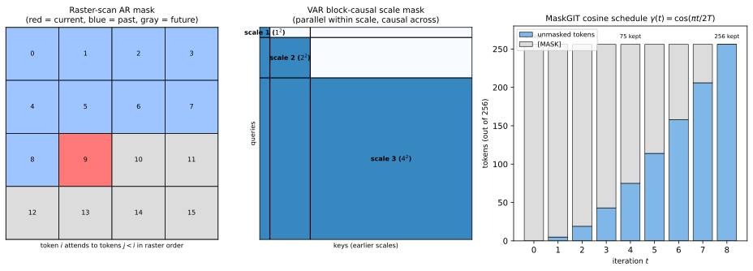
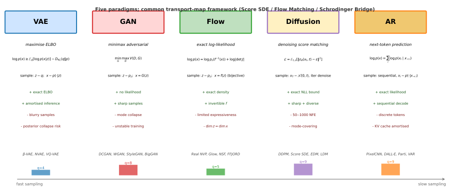

Autoregressive Models for Visual Generation
Autoregressive visual generation evolved through four overlapping waves: (i) pixel-level models that factorise the image distribution as a product of conditionals over raw RGB values (PixelRNN (A. van den Oord, Kalchbrenner, and Kavukcuoglu 2016a), PixelCNN (A. van den Oord et al. 2016), PixelCNN++ (Salimans et al. 2017)); (ii) discrete tokenisation that compresses pixels into learned codebooks before autoregression (VQ-VAE (A. van den Oord, Vinyals, and Kavukcuoglu 2017), VQ-VAE-2 (Razavi, Oord, and Vinyals 2019), RQ-VAE (D. Lee et al. 2022)); (iii) transformer-based generation that ports GPT-style decoders to image and text-to-image (iGPT (M. Chen et al. 2020), DALL-E (Ramesh et al. 2021), Parti (Yu et al. 2022), LlamaGen (Sun et al. 2024)), inheriting the encoder-decoder sequence-modelling architecture from neural machine translation (Sutskever's sequence-to-sequence formulation (Sutskever, Vinyals, and Le 2014) and Bahdanau's content-based attention (Bahdanau, Cho, and Bengio 2015)) where the conditional-token-by-token factorisation was first stress-tested at scale; and (iv) alternative orderings and parallel decoding that break the strict raster-scan dependency (MaskGIT (Chang et al. 2022), MAGE (T. Li et al. 2023), Muse (Chang et al. 2023), ARDM (Hoogeboom et al. 2022), VAR (Tian et al. 2024), Infinity (Han et al. 2025), InfinityStar (J. Liu et al. 2025), VARGPT (Zhuang et al. 2025)). Video extends these designs along the temporal axis (VideoGPT (Yan et al. 2021), TATS (Ge et al. 2022), Phenaki (Villegas et al. 2023), MCVD (Voleti, Jolicoeur-Martineau, and Pal 2022)) and scene-conditioned generation injects layout priors (Make-A-Scene (Gafni et al. 2022), Semantic-Diffusion (Weilun Wang et al. 2023)). Theoretical scaffolding around scale and substrate is provided by autoregressive scaling laws (Henighan et al. 2020), ViT scaling (Zhai et al. 2022), and hardware-lottery analysis (Hooker 2020).
The state-of-the-art landscape on standard image-generation benchmarks shows AR models reaching parity with and in places exceeding diffusion. The leaderboard below collates the headline numbers (ImageNet-256 FID for class-conditional, zero-shot MS-COCO FID for text-to-image where applicable; tokenizer column reports the discrete code source; latency is per-image at the listed resolution; "Cite" anchors to the in-chapter section).
| Method | Year | Params | Tokenizer | Decoding | ImageNet-FID | COCO-FID | Latency |
|---|---|---|---|---|---|---|---|
| PixelRNN (A. van den Oord, Kalchbrenner, and Kavukcuoglu 2016a) | 2016 | ~50M | Raw 8-bit pixel | raster-AR | 3.00 bpd | very slow | |
| PixelCNN (A. van den Oord et al. 2016) | 2016 | ~80M | Raw 8-bit pixel | raster-AR | 3.03 bpd | slow | |
| PixelCNN++ (Salimans et al. 2017) | 2017 | ~95M | Raw + logistic mix | raster-AR | 2.92 bpd | slow | |
| VQ-VAE-2 (Razavi, Oord, and Vinyals 2019) | 2019 | ~13B* | Hierarchical VQ | raster-AR | 31.11 | minutes | |
| iGPT-L (M. Chen et al. 2020) | 2020 | 1.4B | k-means 9-bit pixel | raster-AR | 36.4 | minutes | |
| DALL-E (Ramesh et al. 2021) | 2021 | 12B | dVAE 8192 | raster-AR | ~17 | ~30s/64 cands | |
| MaskGIT (Chang et al. 2022) | 2022 | 227M | VQ-GAN 1024 | masked | 6.18 | ~0.5s | |
| Make-A-Scene (Gafni et al. 2022) | 2022 | 4B | Triple-VQ | raster-AR | 11.84 | ~10s | |
| Parti-20B (Yu et al. 2022) | 2022 | 20B | ViT-VQGAN 8192 | raster-AR | 7.23 | ~15s | |
| MAGE-L (T. Li et al. 2023) | 2023 | 300M | VQ-GAN 1024 | masked | 6.93 | ~0.5s | |
| Muse (Chang et al. 2023) | 2023 | 3B+3B | ViT-VQGAN 8192 | masked+SR | 7.88 | 1.3s | |
| LlamaGen-3B (Sun et al. 2024) | 2024 | 3.1B | VQ-GAN 16384 | raster-AR | 2.18 | 7.2 | ~2s w/ vLLM |
| VAR-d30 (Tian et al. 2024) | 2024 | 2.0B | Multi-scale RQ-VAE | next-scale | 1.73 | ~0.3s | |
| Infinity-2B (Han et al. 2025) | 2025 | 2B | LFQ 32-bit (no book) | next-scale | 0.69 GE | 0.8s @ 1024 | |
| InfinityStar (J. Liu et al. 2025) | 2025 | 8B | 3D LFQ | next-scale | 83.74 VB | 40s/5s 720p | |
| VARGPT (Zhuang et al. 2025) | 2025 | 7B | VAR-style + CLIP | next-scale | 14.8 | ~0.3s+text |
(*) VQ-VAE-2's 13B figure aggregates the top-prior 48-layer Transformer (~12B) with the bottom-prior 20-layer PixelCNN (~1B); per-paper accounting practice varies. "GE" denotes GenEval composite score (text-to-image alignment, higher is better, 0-1) and "VB" denotes VBench composite (text-to-video, higher is better, 0-100); these benchmarks are not directly comparable to FID. Pixel-level rows report bits-per-dimension instead of FID because Inception-v3 features are uninformative at 3232 resolution.

Deep Generative Models
Generative modeling aims to learn the underlying data distribution and generate new samples from it. Classical approaches include Gaussian mixture models (Reynolds 2009), kernel density estimation, and graphical models (Bayesian networks, Markov random fields). These methods scale poorly to high-dimensional data: Gaussian mixtures require exponentially many components, kernel methods suffer from the curse of dimensionality, and graphical-model inference is intractable for dense dependencies. Deep learning revolutionized this field by enabling learning of complex, high-dimensional distributions through expressive neural-network parameterizations with scalable optimization.
Variational Autoencoders (Kingma and Welling 2014) introduced amortized variational inference with neural networks, enabling efficient approximate posterior inference through the Evidence Lower Bound (ELBO). Extensions include importance-weighted bounds (Burda, Grosse, and Salakhutdinov 2016), disentangled representations (Higgins et al. 2017), and hierarchical architectures (Vahdat and Kautz 2020). The VAE framework connects to classical variational Bayes (Jordan et al. 1999) and neural autoencoders (Hinton and Salakhutdinov 2006), combining the probabilistic principles of the former with the representation-learning flexibility of the latter.
Generative Adversarial Networks (Goodfellow et al. 2014) frame generation as a game between generator and discriminator networks through the adversarial game. Key advances include stable training techniques (Gulrajani et al. 2017), progressive growing (Karras et al. 2018), and style-based generation (Karras, Laine, and Aila 2019). The game-theoretic framing inspired an array of subsequent ``adversarial'' methods: adversarial training (Madry et al.), adversarial domain adaptation, and adversarial robustness.
Normalizing Flows (Rezende and Mohamed 2015) provide exact likelihood computation through invertible transformations. Notable architectures include Real NVP (Dinh, Sohl-Dickstein, and Bengio 2017), MAF (Papamakarios, Pavlakou, and Murray 2018), Glow (Kingma and Dhariwal 2018), and Neural Spline Flows (Durkan et al. 2019). Flows generalize classical change-of-variables density estimation by using deep neural networks as the transformation, with careful design constraints to maintain invertibility and efficient Jacobian computation.
Score-based models (Y. Song and Ermon 2020) learn the gradient of the log-density and generate via Langevin dynamics. The connection to diffusion models (Ho, Jain, and Abbeel 2020) established a unified framework through stochastic differential equations (Y. Song et al. 2021). Score-based generation builds on score matching (Hyvärinen 2005) and denoising autoencoders (Vincent et al. 2008), with the continuous-time formulation drawing on results from stochastic calculus (Anderson's reverse-time diffusion theorem from 1982).
Autoregressive models (PixelRNN (A. van den Oord, Kalchbrenner, and Kavukcuoglu 2016b), PixelCNN (A. van den Oord, Kalchbrenner, et al. 2016), WaveNet (A. van den Oord, Dieleman, et al. 2016), GPT (Radford et al. 2019)) provide a competing paradigm that factorizes the joint via the chain rule and models each conditional with a deep neural network. For discrete data and sequences, autoregressive models are often the natural choice; for continuous high-dimensional data, they have been largely superseded by diffusion models due to sampling speed.
Recent work has focused on unifying these paradigms through the score SDE framework (Y. Song et al. 2021), Flow Matching (Lipman et al. 2023), and the Schrödinger bridge perspective (De Bortoli et al. 2021). The field increasingly views VAE/GAN/flow/diffusion as different instantiations of a common transport-map framework, with architectural and training-objective choices distinguishing them rather than fundamental paradigm differences.

Diffusion Models and Transformer Architectures
The diffusion-model literature spans pixel-space to latent-space, U-Net to transformer, single-model to cascade, and image to video; the leaderboard in Table tab:diffusion-sota anchors the dominant lineage by reported FID at canonical resolutions, parameter count, and inference NFE so each prose paragraph below grounds in a numerical comparator. The columns isolate the three axes that drive design choices: quality (FID), scale (parameters), and sampling efficiency (NFE); GAN baselines (BigGAN at 7.4 FID) are included to clarify the diffusion-vs-GAN crossover that ADM established and EDM widened.
| Model | Year | Backbone | Resolution / Task | FID | NFE | Params |
|---|---|---|---|---|---|---|
| BigGAN (GAN baseline) | 2018 | GAN | ImageNet 256 | 7.4 | 1 | 158M |
| DDPM (Ho, Jain, and Abbeel 2020) | 2020 | U-Net | CIFAR-10 uncond | 3.17 | 1000 | 36M |
| DDIM (J. Song, Meng, and Ermon 2021) | 2021 | U-Net | CIFAR-10 (S=50) | 4.67 | 50 | 36M |
| Improved DDPM (Nichol and Dhariwal 2021) | 2021 | U-Net | ImageNet 64 (bpd 2.94) | - | 250 | 100M |
| ADM-G (Dhariwal and Nichol 2021) | 2021 | U-Net | ImageNet 256 cls-cond | 4.59 | 250 | 554M |
| ADM-G + upsmp (Dhariwal and Nichol 2021) | 2021 | U-Net casc. | ImageNet 256 cls-cond | 2.97 | ~ 250 | ~1.0B |
| EDM (Karras et al. 2022) | 2022 | U-Net | CIFAR-10 uncond | 1.79 | 35 | 56M |
| LDM-8 (Rombach et al. 2022) | 2022 | U-Net | ImageNet 256 cls-cond | 3.60 | 250 | 400M |
| GLIDE (Nichol et al. 2022) | 2022 | U-Net | MS-COCO zero-shot | 12.2 | 250 | 3.5B |
| Imagen (Saharia et al. 2022) | 2022 | U-Net casc. | MS-COCO zero-shot | 7.27 | ~ 256 | ~7.6B |
| DALL-E 2 (Ramesh et al. 2022) | 2022 | U-Net casc. | MS-COCO zero-shot | 10.4 | ~ 250 | 4.5B |
| eDiff-I (Balaji et al. 2023) | 2023 | U-Net casc. | MS-COCO zero-shot | 6.95 | ~ 250 | ~9B |
| DiT-XL/2 (Peebles and Xie 2023) | 2023 | DiT | ImageNet 256 (cfg=1.5) | 2.27 | 250 | 675M |
| U-ViT (Bao et al. 2023) | 2023 | U-ViT | ImageNet 256 cls-cond | 2.29 | 250 | 501M |
| SDXL (Podell et al. 2023) | 2023 | U-Net | T2I 1024 (PartiPrompt) | n/a | 50 | 2.6B |
| PixArt- (J. Chen et al. 2023) | 2023 | DiT | T2I 1024 (DrawBench) | n/a | 20 | 600M |
| DALL-E 3 (Betker et al. 2023) | 2023 | LDM | DrawBench GPT-4V judge | n/a | ~ 50 | undisc. |
| Consistency D. (Y. Song et al. 2023) | 2023 | EDM-init | CIFAR-10 (1 step) | 3.55 | 1 | 56M |
| Flow Matching (Lipman et al. 2023) | 2023 | EDM-net | ImageNet 64 (bpd 3.31) | - | 142 | 62M |
| SD3 (MM-DiT) (Esser et al. 2024) | 2024 | MM-DiT | T2I 1024 (GenEval) | n/a | 28 | 8B |
| SVD (Blattmann, Dockhorn, et al. 2023) | 2023 | LDM+temp. | UCF-101 (FVD) | ~140 | 25 | 1.5B |
Diffusion models have emerged as the dominant paradigm for generative modeling, surpassing GANs in image quality while offering stable training and mode coverage. The foundational work on Denoising Diffusion Probabilistic Models (DDPM) (Ho, Jain, and Abbeel 2020) demonstrated that iteratively denoising samples from Gaussian noise produces high-quality images, achieving state-of-the-art FID scores on CIFAR-10 (3.17) and competitive results on LSUN.[fn:s2-ddpm-impl] This work established the connection between diffusion models and denoising score matching, providing both theoretical grounding and practical training recipes.
Subsequent work focused on accelerating sampling, which originally required 1000+ steps. Denoising Diffusion Implicit Models (DDIM) (J. Song, Meng, and Ermon 2021) introduced a non-Markovian formulation enabling 10-50× faster sampling by treating the reverse process as solving an ODE rather than simulating an SDE. Improved DDPM (Nichol and Dhariwal 2021) showed that learning the variance schedule and using fewer steps maintains quality while reducing computation. DPM-Solver++ (Lu et al. 2022) further improved sampling efficiency through high-order ODE solvers specifically designed for guided diffusion, enabling 15-20 step generation.
The architecture evolution moved from U-Net to Transformer backbones. Diffusion Models Beat GANs (Dhariwal and Nichol 2021) demonstrated that architectural improvements (attention at multiple resolutions, adaptive group normalization) and classifier guidance enable diffusion models to surpass BigGAN on ImageNet. The EDM framework (Karras et al. 2022) unified the design space, achieving SOTA FID of 1.79 on CIFAR-10 through careful analysis of noise schedules, preconditioning, and sampling.
The Diffusion Transformer (DiT) (Peebles and Xie 2023) replaced U-Net with a Vision Transformer operating on latent patches, demonstrating clean scaling laws: higher compute (GFLOPs) consistently yields lower FID. DiT-XL/2 achieved 2.27 FID on ImageNet 256×256, establishing transformers as viable diffusion backbones. U-ViT (Bao et al. 2023) showed that treating time, condition, and image patches uniformly as tokens with long skip connections achieves comparable results with simpler architecture.
Text-to-image synthesis scaled these techniques dramatically. Latent Diffusion Models (LDM) (Rombach et al. 2022) moved diffusion to the latent space of a pretrained autoencoder, reducing computation by 4-16× while maintaining quality. GLIDE (Nichol et al. 2022) demonstrated classifier-free guidance outperforms CLIP guidance for photorealism. Imagen (Saharia et al. 2022) showed that scaling the text encoder (T5-XXL) matters more than scaling the image model, achieving breakthrough text-image alignment. DALL-E 2 (Ramesh et al. 2022) used a two-stage approach: CLIP prior generating image embeddings, then diffusion decoder.
The Stable Diffusion family democratized text-to-image. SDXL (Podell et al. 2023) scaled to 3× larger U-Net with dual text encoders, achieving quality competitive with closed-source models. PixArt- (J. Chen et al. 2023) demonstrated efficient training by decomposing into stages (pixel dependency, text alignment, aesthetics), requiring only 10.8% of Stable Diffusion's training compute. Stable Diffusion 3 (Esser et al. 2024) introduced the MM-DiT architecture with separate weights for image and text modalities and rectified flow formulation.
Video generation extended these techniques temporally. Video Diffusion Models (Ho, Salimans, et al. 2022) added 3D attention for temporal coherence. Imagen Video (Ho, Chan, et al. 2022) used cascaded diffusion with spatial and temporal super-resolution. Video LDM (Blattmann, Rombach, et al. 2023) inserted temporal layers into pretrained image LDMs. Stable Video Diffusion (Blattmann, Dockhorn, et al. 2023) demonstrated the importance of data curation for video quality. AnimateDiff (Guo et al. 2024) showed motion modules can animate any personalized text-to-image model without retraining.
Flow matching (Lipman et al. 2023) provided an alternative training paradigm for continuous normalizing flows. Instead of learning a score function, flow matching directly regresses a velocity field that transports noise to data; the score is replaced by a learned velocity generating a probability path interpolating between noise and data . The conditional flow matching (CFM) objective is:
where is the target velocity for the conditional path (linear interpolation with OT paths). Compared to score matching, CFM yields straighter trajectories that require fewer integration steps at inference (typically 20-50 NFEs vs. 100-1000 for standard diffusion). The OT variant uses , producing nearly straight paths that can be sampled with Euler integration in as few as 5 steps. Consistency models (Y. Song et al. 2023) learn to directly map any noisy to via a self-consistency constraint for all on the same trajectory, enabling one-step generation.
Controllable generation became practical with ControlNet (Zhang, Rao, and Agrawala 2023), which adds spatial conditioning (edges, depth, pose) to pretrained models via trainable copies of encoder blocks connected with zero convolutions. InstructPix2Pix (Brooks, Holynski, and Efros 2023) enabled instruction-based editing by training on synthetic edit pairs. Prompt-to-Prompt (Hertz et al. 2022) showed that manipulating cross-attention maps enables localized editing without retraining.
The field continues advancing rapidly, with Sora ("SORA: Video Generation Models as World Simulators" 2024) demonstrating minute-long coherent video generation, suggesting diffusion transformers can serve as world simulators understanding physical dynamics and 3D consistency.
Vision-Language Models: From Contrastive Learning to Multimodal Assistants
The foundation of modern VLMs was established by CLIP (Radford et al. 2021), which demonstrated that contrastive learning on 400 million image-text pairs enables zero-shot transfer to diverse visual tasks.[fn:s3-clip-impl] CLIP's text tower inherits a long lineage: distributed word representations trained by contrasting context-word co-occurrences against negative samples (the word2vec construction of (Mikolov et al. 2013), which introduced negative sampling as a replacement for hierarchical softmax, frequent-word subsampling, and phrase representations, making billion-token corpora trainable on a single machine) were the first widely-deployed evidence that geometry in a learned embedding space reflects semantic structure, and the InfoNCE loss CLIP uses is essentially the same noise-contrastive estimator generalised to cross-modal positive pairs. ALIGN (Jia et al. 2021) showed that noisy web-scale data can substitute for curation when sufficient scale is achieved. SigLIP (Zhai et al. 2023) introduced a simpler sigmoid loss that scales more efficiently than softmax-based contrastive learning. The contrastive pre-training lineage also includes earlier work like VirTex (2020, caption-based supervision), ConVIRT (2020, medical domain), and UniCL (2022, unified classification and contrastive learning), with CLIP's influence coming from its combination of scale, simplicity, and public release. The longer arc reaches back to Baby Talk (Kulkarni et al. 2011), the first end-to-end pipeline that generated natural-language descriptions of unseen images from hand-engineered object/attribute/preposition detectors fed into a tree-CRF; that paper's central claim that visual content can be linearised into compositional language predates CLIP-style contrastive coupling by a decade and frames every subsequent VLM benchmark. Subsequent refinements include OpenCLIP (open reimplementation with documented data), FILIP (fine-grained token-level alignment), and MetaCLIP (careful data curation matching CLIP's original recipe).
Self-supervised visual learning reached new heights with DINOv2 (Oquab et al. 2024), which produces all-purpose visual features through careful data curation and training at scale (below). Chinese CLIP (Yang et al. 2023) extended contrastive pre-training to Chinese language.
The BLIP series (J. Li et al. 2022, 2023; Xue et al. 2024) introduced bootstrapping approaches that filter noisy captions and enable efficient adaptation of frozen encoders (BLIP, BLIP-2). InstructBLIP (Dai et al. 2023) demonstrated the power of instruction tuning for vision-language models. Parallel efforts in this space include ALBEF (2021, introduced the unified encoder-decoder design with image-text matching and contrastive objectives), OFA (2022, unified multimodal sequence-to-sequence learning), and mPLUG (2022-2023, modular cross-attention with skip connections). The BLIP line's distinguishing contribution was CapFilt-style bootstrapping, which has since become a standard technique across the VLM training pipeline.
Flamingo (Alayrac et al. 2022) pioneered few-shot learning in VLMs through interleaved image-text inputs. LLaVA (H. Liu et al. 2023, 2024; Y. J. Lee et al. 2024) established simple yet effective approaches for visual instruction tuning. CogVLM (Weihan Wang et al. 2024) introduced visual expert modules for deep vision-language fusion, while Qwen-VL (Bai et al. 2023) demonstrated strong multilingual capabilities. Contemporary open-source VLMs that extend or compete with these lines include InternVL (2024, high-resolution scaling), IDEFICS (2023-2024, open Flamingo reproduction), MiniGPT-4/v2 (2023, early LLaVA-style open demonstrator), mPLUG-Owl (2023-2024, modular design with visual abstractor), and PaliGemma (2024, Google's open SigLIP + Gemma combination).
Efficient VLMs for deployment include MobileVLM (Chu et al. 2023), TinyGPT-V (Yuan et al. 2024), and LLaVA-Phi (Zhu et al. 2024); see Efficient Vision-Language Models. Frontier systems like GPT-4V (OpenAI 2023) and Gemini (Team et al. 2023, 2024) represent the state of the art in multimodal understanding. Additional closed frontier systems include Claude 3.5 Sonnet (Anthropic), GPT-4o (OpenAI, successor to GPT-4V with stronger multimodal integration), and Grok-Vision (xAI). The closed-vs-open gap has narrowed substantially: as of late 2024, the best open models (Qwen2-VL-72B, InternVL-2-76B) match or exceed GPT-4V on most academic benchmarks, though closed models retain a lead in qualitative usability, reasoning depth, and safety behavior.
Recent systematic surveys include Zhang et al.'s "Vision-Language Models for Vision Tasks: A Survey" (G. Li et al. 2025) and the MMLMs survey by Yin et al., which provide broader coverage complementing the focus here. Reading pathways: for contrastive pre-training, start with CLIP and follow forward through SigLIP; for generative VLMs, follow BLIP -> BLIP-2 -> LLaVA -> LLaVA-NeXT; for frontier systems, read Gemini and GPT-4V system cards alongside technical reports.
SoTA Leaderboard
| Method | Year | Type | Vision enc. | LLM | Train data | IN 0-shot | VQAv2 | COCO R@1 |
|---|---|---|---|---|---|---|---|---|
| CLIP ViT-L/14-336 (Radford et al. 2021) | 2021 | C | ViT-L/14 | - | WIT 400M | 76.2 | - | 58.4 |
| ALIGN (Jia et al. 2021) | 2021 | C | EfficientNet-L | BERT-Large | ALIGN 1.8B | 76.4 | - | 58.6 |
| FLIP ViT-L/14 (Radford et al. 2021) | 2023 | C | ViT-L/14 | - | LAION-400M | 74.6 | - | 54.8 |
| OpenCLIP ViT-G/14 (Radford et al. 2021) | 2022 | C | ViT-G/14 | - | LAION-2B | 80.1 | - | 67.3 |
| EVA-CLIP-E/14+ (Radford et al. 2021) | 2023 | C | ViT-E/14 | - | LAION-2B+ | 82.0 | - | 71.1 |
| SigLIP SoViT-400m (Zhai et al. 2023) | 2023 | C | SoViT-400m/14 | - | WebLI 10B | 83.0 | - | 70.6 |
| Chinese-CLIP ViT-H (Yang et al. 2023) | 2022 | C | ViT-H/14 | RoBERTa-wwm | LAION+Wukong | - | - | - |
| BLIP ViT-L (J. Li et al. 2022) | 2022 | G | ViT-L/16 | BERT-Large | 129M | - | 78.2 | 65.1 |
| CoCa-2.1B (Radford et al. 2021) | 2022 | C+G | ViT-g | dec. 1.1B | ALIGN+JFT-3B | 86.3 | 82.3 | 66.3 |
| BLIP-2 (FlanT5-XXL) (J. Li et al. 2023) | 2023 | G | EVA-ViT-g | FlanT5-XXL 11B | 129M | - | 65.0 | - |
| BEiT-3 (Radford et al. 2021) | 2022 | G | ViT-g (BEiT-3) | BEiT-3 dec. | 35M | - | 84.0 | 76.0 |
| Flamingo-80B (Alayrac et al. 2022) | 2022 | G+I | NFNet-F6 | Chinchilla 70B | M3W 43M+ | - | 82.0 | - |
| IDEFICS-80B (Alayrac et al. 2022) | 2023 | G+I | OpenCLIP H/14 | LLaMA-65B | OBELICS 141M | - | 60.0 | - |
| Florence-2-Large (Radford et al. 2021) | 2023 | G | DaViT-Large | BART-base dec. | FLD-5B | - | - | - |
| MiniGPT-4 (H. Liu et al. 2023) | 2023 | I | EVA-ViT-g | Vicuna-13B | LAION+CC+SBU | - | 48.5 | - |
| LLaVA-1.5-13B (H. Liu et al. 2024) | 2023 | I | CLIP ViT-L-336 | Vicuna-13B | 1.2M | - | 80.0 | - |
| InstructBLIP-13B (Dai et al. 2023) | 2023 | I | EVA-ViT-g | Vicuna-13B | 26 datasets | - | - | - |
| Qwen-VL-Chat (Bai et al. 2023) | 2023 | I | ViT-bigG | Qwen-7B | 1.4B+7M+350K | - | 78.2 | - |
| CogVLM-17B (Weihan Wang et al. 2024) | 2023 | I | EVA2-CLIP-E | Vicuna-7B | 1.5B | - | 82.3 | - |
| LLaVA-NeXT-34B (Y. J. Lee et al. 2024) | 2024 | I | CLIP ViT-L-336 | Nous-Hermes-Yi-34B | 1.3M | - | 83.7 | - |
| GPT-4V (OpenAI 2023) | 2023 | I | undisclosed | GPT-4 | undisclosed | - | 77.2 | - |
| Gemini-1.5 Pro (Team et al. 2024) | 2024 | I | undisclosed | Gemini Pro | undisclosed | - | 73.2 | - |
GQA was dropped to keep the table within 14 cm; instruction-tuned VLM GQA scores cluster between 49 and 67 (InstructBLIP-13B 49.5, Qwen-VL-Chat 57.5, LLaVA-1.5-13B 63.3, CogVLM 65.2, LLaVA-NeXT-34B 67.1) and are visited per-model in the chapter sections below. The " - " entries are not failures: contrastive dual-encoders cannot answer free-form VQA questions without a generative head; instruction VLMs are not optimized for ImageNet zero-shot prompting; closed frontier systems (GPT-4V, Gemini) do not publish architectural details.[fn:s3-problem-vlm-comparability]
The contrastive era (rows 1-7) opens with CLIP, whose ViT-L/14-336 set the 76.2% ImageNet zero-shot bar that anchored the field for two years. ALIGN matched it the same year using 1.8B noisy web pairs, validating that curation could be replaced by scale. FLIP introduced patch-level masking to halve training compute at modest accuracy cost. OpenCLIP reproduced the recipe openly on LAION-2B, climbing to 80.1% with the ViT-G/14 model and giving the academic community its first matched-spec CLIP variant. EVA-CLIP layered MIM-pretrained vision backbones onto LAION to push to 82.0%, while SigLIP swapped softmax InfoNCE for sigmoid loss and reached 83.0% on WebLI-10B; the SigLIP recipe has since become the default vision tower for downstream VLMs (PaliGemma, LLaVA-NeXT-Sigmoid). Chinese-CLIP (row 7) extended the pattern to non-English, with bilingual retrieval scores no English-trained CLIP can match.
The generative and bootstrapping era (rows 8-14) introduced unified objectives for retrieval, captioning, and VQA simultaneously. BLIP's CapFilt cleaned web captions and reached 78.2 VQAv2 with only 129M training pairs. CoCa fused contrastive and captioning losses in one decoder, hitting 86.3 ImageNet zero-shot (the contrastive ceiling at the time) and 82.3 fine-tuned VQAv2. BLIP-2's Q-Former showed that frozen-encoder/frozen-LLM bridging trains for a fraction of full-finetune cost and still reaches 65.0 zero-shot VQAv2 with FlanT5-XXL. BEiT-3 unified vision and language as a single Multiway Transformer, taking 84.0 fine-tuned VQAv2 with only 35M training pairs by reusing the same backbone for image, text, and image-text inputs. Flamingo and its open clone IDEFICS-80B introduced gated cross-attention and Perceiver resamplers to enable few-shot multimodal in-context learning, while Florence-2 went the opposite direction (dense prediction unification with DaViT and a BART-style decoder).
The instruction era (rows 15-22) replaced fine-tuning with visual instruction tuning. MiniGPT-4 showed the basic recipe, LLaVA-1.5 cleaned it up with a 2-layer MLP projector and 336px CLIP, reaching 80.0 VQAv2 on a 1.2M-sample budget. InstructBLIP turned 26 datasets into instruction format atop the BLIP-2 Q-Former. Qwen-VL added bounding-box supervision and bilingual training. CogVLM introduced "visual expert" parallel layers (separate QKV/FFN per Transformer block) for deeper fusion, reaching 82.3 VQAv2 without forgetting language ability. LLaVA-NeXT scaled to dynamic resolution and 34B LLM backbones (83.7 VQAv2). The closed frontier (GPT-4V, Gemini-1.5 Pro) reports lower academic VQAv2 (77.2 / 73.2) than the best open-source models on the same benchmark, but holds qualitative leads on long-context, document, and reasoning evaluations not tabulated here; the closed-vs-open gap that mattered most in 2023 has been substantially closed by late 2024 on extractive benchmarks while remaining wide on holistic ones.